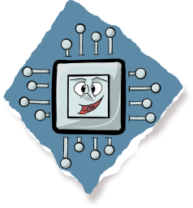

Die Central Processing Unit
Ich habe eine Aufgabe für dich, infobit. Ein Anwender möchte die Website “infoteam.de” aufrufen. Reise für mich durch das Internet zu diesem Webserver und bring mir die Website, damit ich sie anzeigen Kann!

Ich mach mich sofort auf den Weg!
Da musst du erst mal den DNS-Server besuchen, dort bekommst du die IP-Adresse von dem Webserver. Warte ich zeige dir den Weg!

Kannst du mir sagen wo es hier weitergeht, ich muss zum Webserver.
INFO: Fahre mit der Maus über den Switch!
Du muss nach der 80.192.233.30 suchen. Am besten gehst du zum Router, er kann dich in das Internet leiten, wo du den Webserver findest.
Keep me clicked!
Hallo Domain Name Server, weist du wie die IP-Adresse von “www.infoteam.de” lautet?
Bist du der Router ?
In welcher Richtung liegt die Adressse
80.192.233.30?
Kannst du mir weiterhelfen?

Ja der Router bin ich, du musst wissen, hier fungiere ich dir gegenüber als NAT-Router. Das heisst du kriegst von mir eine öffentliche Adresse für deinen Weg durch das Internet. Da hinten steht mein Flugzeug, dass kannst du für den Weg durch das Internet benutzen.


Auf dem Weg durch das Internet lauern für das Infobit unzählige Gefahren. Da können Pakete verloren gehen, Pakete mit versteckter Schadsoftware geholt werden oder das Infobit kann sogar ganz verloren gehen! Doch meistens geht alles gut und das Infobit kommt an seinem Ziel an und wieder zurück.
Jeder PC, so auch ein Server hat unzählige sogenannte Ports. Jeder Port stellt andere Daten bereit, so sind beim Webserver auf Port 80 Daten für die Internetseite.
Nachdem sich das Infobit die Daten geholt hat, fliegt es wieder den Weg durchs Internet zurück zum Infoteam-Netzwerk.


Info: Klick auf den Brief zum Datenübertragen!
Währendessen, an der Grenze zwischen Internet und Infoteam-Netzwerk versucht sich ein tapferes Virus seinen Weg hinein, in das Netzwerk zu bahnen doch ...

... Es hat nicht mit der unaufhaltbaren Firewall gerechnet, die von einem findigen Sysadmin eingerichtet wurde, damit sie sämtlichen ungewollten Datentraffic unaufhaltsam abwehrt


Click!
Nachdem das Infobit wieder im heimischen Netzwerk ist, trifft es auf den Router, der ihm seine ursprüngliche IP-Adresse und den Port des PC`s gibt, wo er herkam. Mit diesen Daten macht es sich auf den Weg zum Switch.
Click!
Mit Hilfe der IP-Adresse kann der Switch dem Infobit den Weg zu seinem Ursprungsrechner zeigen. Wohin dieser sich unverzüglich aufmacht.
Wieder am Ursprungsrechenr angekommen, übergibt das Infobit seine wertvolle Fracht der CPU, damit sie sie anzeigen kann.
Du kannst nun auf den Umschlag klicken!